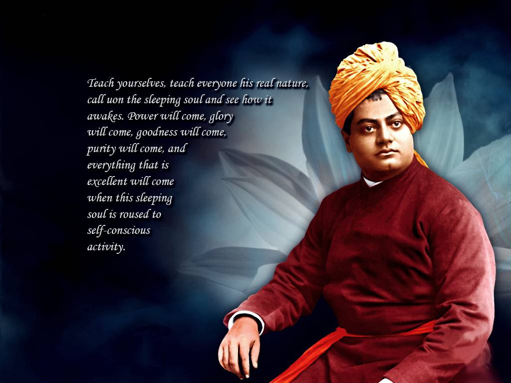

Biography
A spiritual genius of commanding intellect and power, Vivekananda crammed immense labor and achievement into
his short life, 1863-1902. Born in the Datta family of Calcutta, the youthful Vivekananda embraced the agnostic
philosophies
of the Western mind along with the worship of science. At the same time, vehement in his desire to know the
truth about God, he questioned people of holy reputation, asking them if they had seen God. He found such a
person
in Sri Ramakrishna, who became his master, allayed his doubts, gave him God vision, and transformed him into
sage and prophet with authority to teach. After Sri Ramakrishna's death, Vivekananda renounced the world and
criss-crossed
India as a wandering monk. His mounting compassion for India's people drove him to seek their material help from
the West. Accepting an opportunity to represent Hinduism at Chicago's Parliament of Religions in 1893,
Vivekananda
won instant celebrity in America and a ready forum for his spiritual teaching. For three years he spread the
Vedanta philosophy and religion in America and England and then returned to India to found the Ramakrishna Math
and Mission. Exhorting his nation to spiritual greatness, he wakened India to a new national consciousness. He
died July 4, 1902, after a second, much shorter sojourn in the West. His lectures and writings have been
gathered
into nine volumes. More »
Personal Life(1863-1902)
Birth and childhood(1863–88)
Vivekananda was born Narendranath Datta (shortened to Narendra or Naren)at his ancestral home at 3 Gourmohan
Mukherjee Street in Calcutta,the capital of British India, on 12 January 1863 during the Makar Sankranti festival.
He belonged to a traditional
Bengali Kayastha family and was one of nine siblings. His father, Vishwanath Datta, was an attorney at the Calcutta
High Court. Durgacharan Datta, Narendra's grandfather was a Sanskrit and Persian scholar who left his family
and became a monk at age twenty-five. His mother, Bhubaneswari Devi, was a devout housewife. The progressive,
rational attitude of Narendra's father and the religious temperament of his mother helped shape his thinking
and personality.
More
»
Education(1863–88)
In 1871, at the age of eight, Narendranath enrolled at Ishwar Chandra Vidyasagar's Metropolitan Institution, where
he went to school until his family moved to Raipur in 1877. In 1879, after his family's return to Calcutta, he was
the only student to receive
first-division marks in the Presidency College entrance examination. He was an avid reader in a wide range of
subjects, including philosophy, religion, history, social science, art and literature.He was also interested
in Hindu scriptures, including the Vedas, the Upanishads, the Bhagavad Gita, the Ramayana, the Mahabharata and the
Puranas. Narendra was trained in Indian classical music, and regularly participated in physical exercise,
sports and organised activities. Narendra studied Western logic, Western philosophy and European history at the
General Assembly's Institution (now known as the Scottish Church College). In 1881 he passed the Fine Arts
examination, and completed a Bachelor of Arts degree in 1884.
More »
Spiritual apprenticeship - influence of Brahmo Samaj
In 1880 Narendra joined Keshab Chandra Sen's Nava Vidhan, which was established by Sen after meeting Ramakrishna and
reconverting from Christianity to Hinduism. Narendra became a member of a Freemasonry lodge "at some point before
1884"and of the Sadharan
Brahmo Samaj in his twenties, a breakaway faction of the Brahmo Samaj led by Keshab Chandra Sen and Debendranath
Tagore. From 1881 to 1884 he was also active in Sen's Band of Hope, which tried to discourage youths from
smoking and drinking.
More
»
Death(1902)
On 4 July 1902 (the day of his death) Vivekananda awoke early, went to the chapel at Belur Math
and meditated for three hours. He taught Shukla-Yajur-Veda, Sanskrit grammar and the philosophy of yoga to
pupils, later discussing with colleagues a planned Vedic college in the Ramakrishna Math. At 7:00 p.m. Vivekananda
went to his room, asking not to be disturbed;he died at 9:10 p.m. while meditating.According to his disciples,
Vivekananda attained mahasamādhi; the rupture of a blood vessel in his brain was reported as a possible cause of
death.
More
»